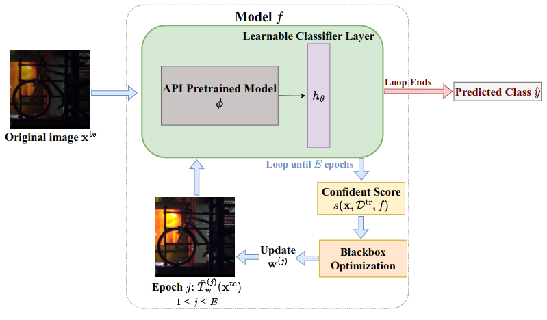
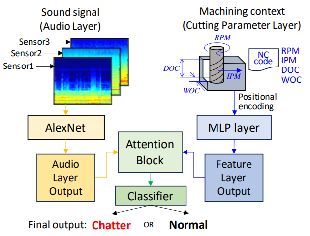
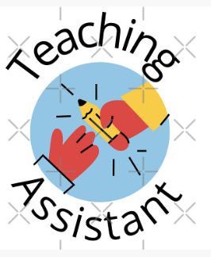

|
Thu Bui
Currently, I am working at Purdue University advised by Professor Bruno Ribeiro, where I work on Out-Of-Distribution problems and Graph Generative Models.
I completed my bachelor's degree with Honors in Computer Science and Mathematics at Trinity College in 2021
under the supervision of Professor Ryan Pellico (Mathematics) and Professor Ewa Syta (Computer Science).
Email /
CV /
Bio /
Github
|
|
News
- 05/2024: One paper accepted at Uncertainty in Artificial Intelligence (UAI) 2024.
- 03/2024: One paper accepted at North American Manufacturing Research Conference (NAMRC) 52.
- 08/2021: I started my journey with Purdue University
- 05/2021: I graduated Magna Cum Laude from Trinity College.
|
Research
I'm interested in computer vision, network science, and machine learning, especially deep learning.
My research focuses on improving the out-of-distribution robustness of deep neural networks by incorporating domain knowledge like transformation invariances.
I also have a strong interest in graph generative models.
|
|

|
Anonymous
Under review, 2024
paper
Developing a test-time adaptation method for any black-box pretrained models to
specifically address transformation out-of-distribution challenges,
particularly focusing on color changes.
|
|

|
Online real-time machining chatter sound detection using convolutional neural network by adopting expert knowledge
Eunseob Kim,
Thu Bui,
Junyi Yuan,
S Chandra Mouli,
Bruno Ribeiro,
Raymond A. Yeh,
Michael P. Fassnacht,
Martin B.G. Jun,
NAMRC, 52
paper
Introduced a novel approach to detect machining chatter by blending expert knowledge with CNNs.
The framework digitizes machine tool and sound data, enhancing chatter event labeling accuracy.
With an attention block, the model surpasses baselines in both in-distribution and out-of-distribution testing,
achieving impressive accuracies of 96% on known and 94.51% on unknown machine tools.
|
|

|
Teaching assistant (2021-2022 and 2023 - Now)
Purdue University
Teaching assistant in several fundamental computer science classes.
|
|
Invited Speaker
SMART Films Consortium 2023
|
|
Invited Speaker
Mathematical Association of America Northeastern Section Fall 2019 Conference
|
|